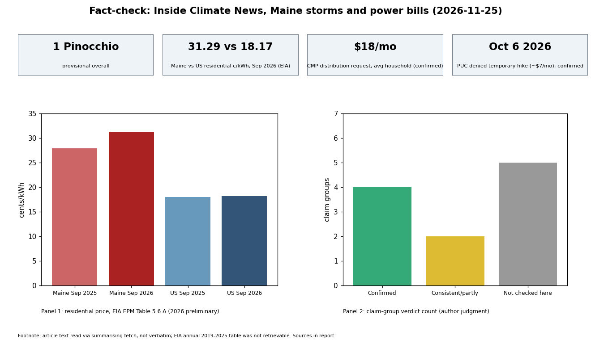

Every rate-case fact I could check holds. CMP's request is about $18 a month for the average household in distribution rates. The PUC unanimously denied CMP's temporary increase (about $7 a month) on 2026-10-06. A decision on the full $189 million case is expected in spring 2027, which matches the article's April 2027. Maine's September 2026 residential price was 31.29 c/kWh, against 18.17 for the U.S. The article's headline statistics (64% vs 38% price growth 2019-2025, $600M+ CMP storm costs, $179 vs $68 per customer, $3M annual cap) could not be confirmed from primary sources here.
| Claim | Verdict | Source |
|---|---|---|
| CMP requests about $18/month more for average household | Confirmed | Maine Public / Press Herald coverage via search |
| PUC rejected temporary increase | Confirmed (2026-10-06, unanimous) | Maine Public, BDN, WABI |
| Decision expected April 2027 | Consistent (reports say "spring 2027") | Same |
| Maine prices far above US | Confirmed directionally: 31.29 vs 18.17 c/kWh, Sep 2026 | EIA Electric Power Monthly Table 5.6.A |
| Maine +64% vs US +38%, 2019-2025 | Not checkable here (annual table fetch empty) | EIA |
| CMP $600M+ storm costs 2021-2025; $179 vs $68 per customer; $3M cap; most outages per customer 2023-24 | Not checkable here (partial: PUC/OPA documents show multi-year storm costs of tens to over $100M per year) | Maine OPA, PUC |
| Expert: ROE could be cut by a third or more | Not checked verbatim; ROE dispute confirmed (requested 9.8% vs 9.35% current) | Press Herald, Maine Monitor |